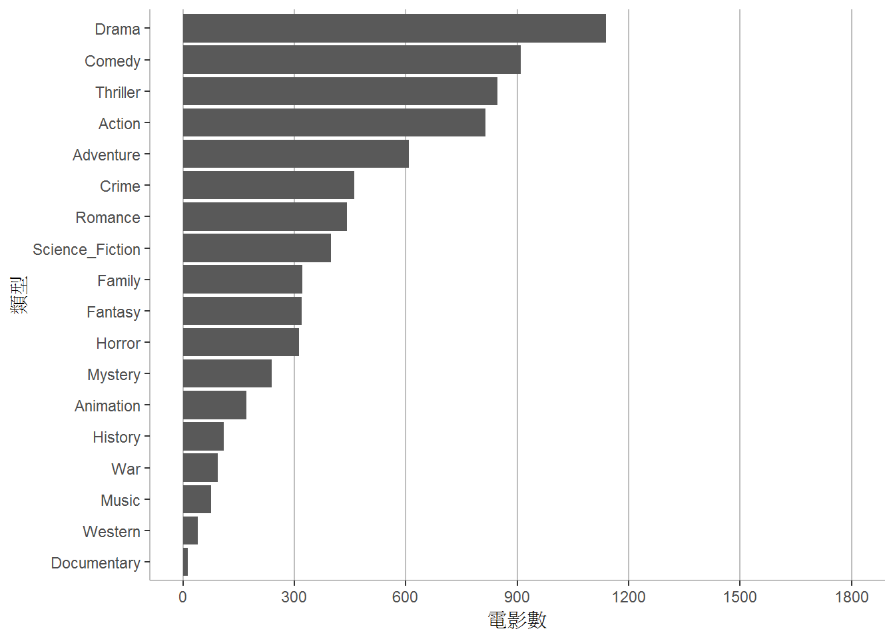
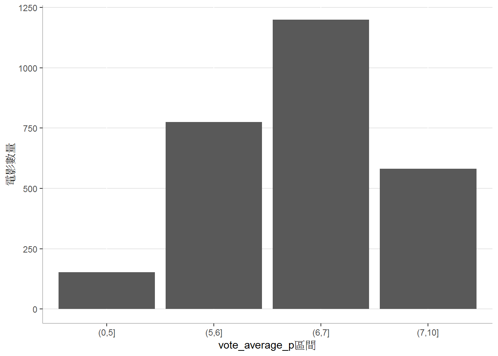
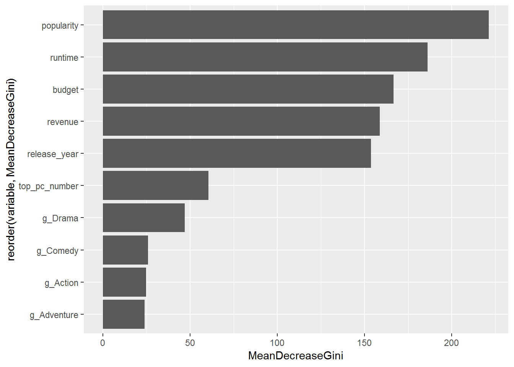

Chapter 8 利用R語言進行監督式機器學習
課程簡介
課程簡介
學習目標
8.1 監督式機器學習
監督式機器學習 (supervised machine learning)是利用一組已經標注結果的資料，預測尚未標注結果的新資料的可能結果。以數學的方式來表示這個概念，監督式機器學習利用一組資料 \(X_{1}, X_{2}, ..., X_{N}\) 以及其對應的結果 \(Y_{1}, Y_{2}, ..., Y_{N}\) ，設法找到一個模型 \(f(x)\) ，盡可能使 \(f(X_{1}) = Y_{1}\) 、 \(f(X_{2}) = Y_{2}\) 、…、 \(f(X_{N}) = Y_{N}\) 。當有新的資料 \(\hat{X}\) 進入時，可以利用 \(f(x)\) 計算的結果 \(f(\hat{X})\) ，做為可能結果的預測。
通常來說，如果要預測的結果是連續的數值，通常將這類的問題稱為迴歸 (regression)，如果是離散型的結果的話，則稱為分類 (classification)。
分類的問題可以視為運用現有的資料 \(X_{1}, X_{2}, ..., X_{N}\) 以及其對應的類別 \(Y_{1}, Y_{2}, ..., Y_{N}\) ，嘗試找到一個分類器模型 \(f(x)\) 來預測新資料 \(\hat{X}\) 的類別 \(f(\hat{X})\) 。
8.2 TMDB電影評分預測
TMDB資料是Kaggle提供做為學習資料科學的資料集。Kaggle利用TMDB (The Movie Database)提供的電影資料建立的資料集，大約有5000筆電影資料，在Kaggle上的下載點為TMDB 5000 Movie Dataset。
本次課程將利用TMDB資料集說明如何應用電影資料(片長、類型、製作公司、預算、收入、…等)，進行監督式機器學習，預測電影評分。可參考Project Report: IMDB 5000 Movie Dataset，有類似的做法。
8.2.1 讀入資料
載入tidyverse套件
library(tidyverse)讀取TMDB資料集
movies <- read_csv("tmdb_5000_movies.csv")讀入資料後，先看目前的情況。
summary(movies)## budget genres homepage
## Min. : 0 Length:4803 Length:4803
## 1st Qu.: 790000 Class :character Class :character
## Median : 15000000 Mode :character Mode :character
## Mean : 29045040
## 3rd Qu.: 40000000
## Max. :380000000
##
## id keywords original_language original_title
## Min. : 5 Length:4803 Length:4803 Length:4803
## 1st Qu.: 9014 Class :character Class :character Class :character
## Median : 14629 Mode :character Mode :character Mode :character
## Mean : 57166
## 3rd Qu.: 58611
## Max. :459488
##
## overview popularity production_companies
## Length:4803 Min. : 0.000 Length:4803
## Class :character 1st Qu.: 4.668 Class :character
## Mode :character Median : 12.922 Mode :character
## Mean : 21.492
## 3rd Qu.: 28.314
## Max. :875.581
##
## production_countries release_date revenue
## Length:4803 Min. :1916-09-04 Min. :0.000e+00
## Class :character 1st Qu.:1999-07-14 1st Qu.:0.000e+00
## Mode :character Median :2005-10-03 Median :1.917e+07
## Mean :2002-12-27 Mean :8.226e+07
## 3rd Qu.:2011-02-16 3rd Qu.:9.292e+07
## Max. :2017-02-03 Max. :2.788e+09
## NA's :1
## runtime spoken_languages status tagline
## Min. : 0.0 Length:4803 Length:4803 Length:4803
## 1st Qu.: 94.0 Class :character Class :character Class :character
## Median :103.0 Mode :character Mode :character Mode :character
## Mean :106.9
## 3rd Qu.:118.0
## Max. :338.0
## NA's :2
## title vote_average vote_count
## Length:4803 Min. : 0.000 Min. : 0.0
## Class :character 1st Qu.: 5.600 1st Qu.: 54.0
## Mode :character Median : 6.200 Median : 235.0
## Mean : 6.092 Mean : 690.2
## 3rd Qu.: 6.800 3rd Qu.: 737.0
## Max. :10.000 Max. :13752.0
## 8.3 資料整理與探索性資料分析
整理各個variable，分為以下四類
- 電影編號：id
- 與本次分析無關者：homepage, keywords, original_title, overview, production_countries, spoken_languages, status, tagline, title
- 數值資料類型：budget, popularity, revenue, runtime, vote_average, vote_count
- 日期資料類型：release_date
- 簡單字串資料類型：original_language
- 複雜字串資料類型：genres, production_companies
8.3.1 處理與本次分析無關的variables
與本次分析無關的variables，不需進一步分析，可以直接捨棄。
movies <- movies %>%
select(-homepage, -keywords, -original_title, -overview, -production_countries, -spoken_languages, -status, -tagline, -title)捨棄這些variables後，資料集從20個variables，轉換為11個variables。
8.3.2 數值資料類型
觀察每個數值資料的範圍
movies %>%
select(budget, popularity, revenue, runtime, vote_average, vote_count) %>%
summary()## budget popularity revenue runtime
## Min. : 0 Min. : 0.000 Min. :0.000e+00 Min. : 0.0
## 1st Qu.: 790000 1st Qu.: 4.668 1st Qu.:0.000e+00 1st Qu.: 94.0
## Median : 15000000 Median : 12.922 Median :1.917e+07 Median :103.0
## Mean : 29045040 Mean : 21.492 Mean :8.226e+07 Mean :106.9
## 3rd Qu.: 40000000 3rd Qu.: 28.314 3rd Qu.:9.292e+07 3rd Qu.:118.0
## Max. :380000000 Max. :875.581 Max. :2.788e+09 Max. :338.0
## NA's :2
## vote_average vote_count
## Min. : 0.000 Min. : 0.0
## 1st Qu.: 5.600 1st Qu.: 54.0
## Median : 6.200 Median : 235.0
## Mean : 6.092 Mean : 690.2
## 3rd Qu.: 6.800 3rd Qu.: 737.0
## Max. :10.000 Max. :13752.0
## budget(預算)、revenue(收入)、runtime(放映時間)、vote_count(投票人數)等為0並不合理，首先刪除這些資料為0者
movies <- movies %>%
filter(budget>0 & revenue>0 & runtime>0 & vote_count>0)再觀察每個數值資料的範圍
movies %>%
select(budget, popularity, revenue, runtime, vote_average, vote_count) %>%
summary()## budget popularity revenue runtime
## Min. : 1 Min. : 0.02 Min. :5.000e+00 Min. : 41.0
## 1st Qu.: 10500000 1st Qu.: 10.48 1st Qu.:1.704e+07 1st Qu.: 96.0
## Median : 25000000 Median : 20.42 Median :5.520e+07 Median :107.0
## Mean : 40678774 Mean : 29.05 Mean :1.213e+08 Mean :110.7
## 3rd Qu.: 55000000 3rd Qu.: 37.35 3rd Qu.:1.464e+08 3rd Qu.:121.0
## Max. :380000000 Max. :875.58 Max. :2.788e+09 Max. :338.0
## vote_average vote_count
## Min. :2.300 Min. : 1.0
## 1st Qu.:5.800 1st Qu.: 178.0
## Median :6.300 Median : 471.0
## Mean :6.313 Mean : 977.9
## 3rd Qu.:6.900 3rd Qu.: 1148.0
## Max. :8.500 Max. :13752.0budget最小為1 ，看起來仍然不合理。顯示budget少於1000的電影共幾筆？
print(paste("budget少於1000的電影數量：", nrow(movies[movies$budget<1000,])))## [1] "budget少於1000的電影數量： 13"刪除budget少於1000的電影
movies <- movies %>%
filter(budget>=1000)收入太少，也不正常，顯示revenue少於1000的電影共幾筆？
print(paste("revenue少於1000的電影數量：", nrow(movies[movies$revenue<1000,])))## [1] "revenue少於1000的電影數量： 5"再刪除revenue少於1000的電影
movies <- movies %>%
filter(revenue>=1000)分析runtime的分布情形
summary(movies$runtime)## Min. 1st Qu. Median Mean 3rd Qu. Max.
## 41.0 96.0 107.0 110.8 121.0 338.0畫成直方圖看看
似乎OK.
最後分析vote_count，投票人數太少，資料較不準確，顯示vote_count少於100的電影共幾筆？
print(paste("vote_count少於100的電影數量：", nrow(movies[movies$vote_count<100,])))## [1] "vote_count少於100的電影數量： 501"再刪除vote_count少於100的電影
movies <- movies %>%
filter(vote_count>=100)再觀察每個數值資料的範圍
movies %>%
select(budget, popularity, revenue, runtime, vote_average, vote_count) %>%
summary()## budget popularity revenue runtime
## Min. : 7000 Min. : 1.041 Min. :2.200e+04 Min. : 63.0
## 1st Qu.: 14000000 1st Qu.: 14.977 1st Qu.:3.001e+07 1st Qu.: 97.0
## Median : 30000000 Median : 24.901 Median :7.575e+07 Median :107.0
## Mean : 45711244 Mean : 33.757 Mean :1.422e+08 Mean :111.1
## 3rd Qu.: 60000000 3rd Qu.: 41.500 3rd Qu.:1.700e+08 3rd Qu.:122.0
## Max. :380000000 Max. :875.581 Max. :2.788e+09 Max. :248.0
## vote_average vote_count
## Min. :3.000 Min. : 100.0
## 1st Qu.:5.800 1st Qu.: 297.0
## Median :6.400 Median : 611.5
## Mean :6.376 Mean : 1155.4
## 3rd Qu.:7.000 3rd Qu.: 1369.2
## Max. :8.500 Max. :13752.08.3.3 日期資料類型
分析release_date，因為其資料型態是Date，所以載入日期時間處理套件
library(lubridate)觀察release_date的分布情形
summary(movies$release_date)## Min. 1st Qu. Median Mean 3rd Qu.
## "1927-01-10" "1999-07-14" "2006-03-06" "2003-06-01" "2011-05-15"
## Max.
## "2016-09-09"從1927年到2016年，最早期的電影數較少
查看每年的上映電影數
movies %>%
mutate(release_year=year(release_date)) %>%
group_by(release_year) %>%
summarise(count=n()) %>%
ggplot() +
geom_line(aes(x=release_year, y=count)) +
scale_x_continuous(limits=c(1910, 2020), breaks=seq(1910, 2020, 10)) +
labs(x="放映年份", y="電影數量") +
theme(panel.background = element_blank(),
panel.grid.major.y = element_line(color="grey70"),
axis.line = element_line(color="grey"))## Warning: The `printer` argument is deprecated as of rlang 0.3.0.
## This warning is displayed once per session.
以放映年份取代放映日期，便於之後的分析
movies <- movies %>%
mutate(release_year=year(release_date)) %>%
select(-release_date)8.3.4 簡單字串類型
簡單字串資料類型與複雜資料的差別是前者的資料格式較單純，簡單字串資料類型只有一個variable：original_language。
分析original_language
movies %>%
group_by(original_language) %>%
summarise(count=n()) %>%
mutate(proportion=count/sum(count)) %>%
arrange(desc(proportion))## # A tibble: 24 x 3
## original_language count proportion
## <chr> <int> <dbl>
## 1 en 2617 0.966
## 2 fr 18 0.00665
## 3 es 13 0.00480
## 4 ja 10 0.00369
## 5 de 8 0.00295
## 6 zh 8 0.00295
## 7 it 5 0.00185
## 8 cn 4 0.00148
## 9 ko 4 0.00148
## 10 da 3 0.00111
## # ... with 14 more rows可以發現雖然original_language中有許多可能的值，也就是收錄許多語言的電影，但絕大部分是英語片(96.64%)，因此捨棄這個variable
movies <- movies %>%
select(-original_language)8.3.5 複雜字串資料類型
IMDB 5000 Movie Dataset中，為了可以表示多個可能的值，genres(電影類型)和production_companies製作公司都是屬於較複雜的字串資料類型，而且都是以JSON的方式表示這些值。例如
movies$genres[1]## [1] "[{\"id\": 28, \"name\": \"Action\"}, {\"id\": 12, \"name\": \"Adventure\"}, {\"id\": 14, \"name\": \"Fantasy\"}, {\"id\": 878, \"name\": \"Science Fiction\"}]"因此，為了表示這些值，首先載入JSON的處理套件jsonlite。
library(jsonlite)並且撰寫一個函數來取得這些variable上所有的資料
valueExtract <- function (y) {
x<- fromJSON(y)
g <- paste(x$name, collapse="%")
gsub(" ", "_", g)
}首先處理所有電影的genres資料
movies$genres_data <- sapply(movies$genres, valueExtract)將電影的每一個genres展開
movies_genres <- movies %>%
select(id, genres_data) %>%
mutate(genres_data=strsplit(genres_data, split="%")) %>%
unnest(genres_data) %>%
mutate(value=1)統計每一個genre出現的電影數，並繪製成圖形
movies_genres %>%
group_by(genres_data) %>%
summarise(count=sum(value)) %>%
ggplot() +
geom_col(aes(x=reorder(genres_data, count), y=count)) +
coord_flip() +
scale_y_continuous(limits=c(0, 1800), breaks=seq(0, 1800, 300)) +
labs(x="類型", y="電影數") +
theme(panel.background = element_blank(),
panel.grid.major.x = element_line(color="grey"),
axis.line = element_line(color="grey")) 最多為Drama、Comedy、Thriller和Action，最少者如Western和Documentary。
將movies_genres從long format轉成wide format
movies_genres <- movies_genres %>%
mutate(genres_data=paste0("g_", genres_data)) %>%
spread(key=genres_data, value=value, fill=0)合併兩個data frame，捨棄genres和genres_data兩個variables
movies <- movies %>%
left_join(movies_genres) %>%
select(-genres, -genres_data)## Joining, by = "id"分析production_companies
movies$pc_data <- sapply(movies$production_companies, valueExtract)將電影的每一個production_companies展開
movies_pc <- movies %>%
select(id, pc_data) %>%
mutate(pc_data=strsplit(pc_data, split="%")) %>%
unnest(pc_data) %>%
mutate(value=1)統計電影製作公司與他們製作的電影數 (按電影數排名)
production_companies <- movies_pc %>%
group_by(pc_data) %>%
summarise(count=n()) %>%
arrange(desc(count))製作電影數前100的電影製作公司
top100pc <- production_companies %>%
slice(1:100) %>%
pull(pc_data)電影的製作公司包含幾家前100製作公司
movies_pc <- movies_pc %>%
mutate(value=ifelse(pc_data %in% top100pc, 1, 0)) %>%
group_by(id) %>%
summarise(top_pc_number=sum(value))將電影的製作公司包含前100製作公司的數量與movies合併，捨棄production_companies和pc_data兩個variables，並且將top_pc_number的NA值改為0。
movies <- movies %>%
left_join(movies_pc) %>%
select(-production_companies, -pc_data) %>%
mutate(top_pc_number=ifelse(is.na(top_pc_number), 0, top_pc_number))## Joining, by = "id"8.3.6 準備預測目標
預測的目標variable為vote_average，檢視這個variable的分布情形。
movies %>%
ggplot() +
geom_histogram(aes(x=vote_average), breaks=seq(0, 10, 1)) +
scale_x_continuous(breaks=seq(0, 10, 1), minor_breaks = NULL) +
labs(x="vote_average區間", y="電影數量") +
theme(panel.background = element_blank(),
axis.line=element_line(color="grey"),
panel.grid.major.y = element_line(color="grey90"))
根據vote_average的分布情形，決定將這個variable分為x<=5, 5
檢視資料區間內資料的數量
movies %>%
group_by(vote_average_p) %>%
summarise(count=n()) %>%
ggplot() +
geom_col(aes(x=vote_average_p, y=count)) +
labs(x="vote_average_p區間", y="電影數量") +
theme(panel.background = element_blank(),
axis.line=element_line(color="grey"),
panel.grid.major.y = element_line(color="grey90"))
8.3.7 完成資料整理
在進行資料探勘前，最後再檢視一次movies
summary(movies)## budget id popularity
## Min. : 7000 Min. : 5 Min. : 1.041
## 1st Qu.: 14000000 1st Qu.: 3010 1st Qu.: 14.977
## Median : 30000000 Median : 10586 Median : 24.901
## Mean : 45711244 Mean : 46166 Mean : 33.757
## 3rd Qu.: 60000000 3rd Qu.: 49030 3rd Qu.: 41.500
## Max. :380000000 Max. :417859 Max. :875.581
## revenue runtime release_year g_Action
## Min. :2.200e+04 Min. : 63.0 Min. :1927 Min. :0.000
## 1st Qu.:3.001e+07 1st Qu.: 97.0 1st Qu.:1999 1st Qu.:0.000
## Median :7.575e+07 Median :107.0 Median :2006 Median :0.000
## Mean :1.422e+08 Mean :111.1 Mean :2003 Mean :0.301
## 3rd Qu.:1.700e+08 3rd Qu.:122.0 3rd Qu.:2011 3rd Qu.:1.000
## Max. :2.788e+09 Max. :248.0 Max. :2016 Max. :1.000
## g_Adventure g_Animation g_Comedy g_Crime
## Min. :0.0000 Min. :0.00000 Min. :0.0000 Min. :0.0000
## 1st Qu.:0.0000 1st Qu.:0.00000 1st Qu.:0.0000 1st Qu.:0.0000
## Median :0.0000 Median :0.00000 Median :0.0000 Median :0.0000
## Mean :0.2249 Mean :0.06315 Mean :0.3357 Mean :0.1702
## 3rd Qu.:0.0000 3rd Qu.:0.00000 3rd Qu.:1.0000 3rd Qu.:0.0000
## Max. :1.0000 Max. :1.00000 Max. :1.0000 Max. :1.0000
## g_Documentary g_Drama g_Family g_Fantasy
## Min. :0.000000 Min. :0.0000 Min. :0.0000 Min. :0.0000
## 1st Qu.:0.000000 1st Qu.:0.0000 1st Qu.:0.0000 1st Qu.:0.0000
## Median :0.000000 Median :0.0000 Median :0.0000 Median :0.0000
## Mean :0.004801 Mean :0.4206 Mean :0.1185 Mean :0.1182
## 3rd Qu.:0.000000 3rd Qu.:1.0000 3rd Qu.:0.0000 3rd Qu.:0.0000
## Max. :1.000000 Max. :1.0000 Max. :1.0000 Max. :1.0000
## g_History g_Horror g_Music g_Mystery
## Min. :0.00000 Min. :0.0000 Min. :0.0000 Min. :0.00000
## 1st Qu.:0.00000 1st Qu.:0.0000 1st Qu.:0.0000 1st Qu.:0.00000
## Median :0.00000 Median :0.0000 Median :0.0000 Median :0.00000
## Mean :0.04025 Mean :0.1152 Mean :0.0277 Mean :0.08826
## 3rd Qu.:0.00000 3rd Qu.:0.0000 3rd Qu.:0.0000 3rd Qu.:0.00000
## Max. :1.00000 Max. :1.0000 Max. :1.0000 Max. :1.00000
## g_Romance g_Science_Fiction g_Thriller g_War
## Min. :0.0000 Min. :0.000 Min. :0.0000 Min. :0.00000
## 1st Qu.:0.0000 1st Qu.:0.000 1st Qu.:0.0000 1st Qu.:0.00000
## Median :0.0000 Median :0.000 Median :0.0000 Median :0.00000
## Mean :0.1632 Mean :0.147 Mean :0.3124 Mean :0.03434
## 3rd Qu.:0.0000 3rd Qu.:0.000 3rd Qu.:1.0000 3rd Qu.:0.00000
## Max. :1.0000 Max. :1.000 Max. :1.0000 Max. :1.00000
## g_Western top_pc_number vote_average_p
## Min. :0.0000 Min. :0.00 (0,5] : 152
## 1st Qu.:0.0000 1st Qu.:1.00 (5,6] : 775
## Median :0.0000 Median :1.00 (6,7] :1199
## Mean :0.0144 Mean :1.37 (7,10]: 582
## 3rd Qu.:0.0000 3rd Qu.:2.00
## Max. :1.0000 Max. :8.00捨棄variable id
movies <- movies %>%
select(-id)8.4 監督式機器學習常用的測試套件
載入套件
library(caret)8.4.1 切分訓練與測試資料
sd <- round(second(Sys.time())*100)
set.seed(sd)
# Step 1: Get row numbers for the training data
trainRowNumbers <- createDataPartition(movies$vote_average_p, p=0.8, list=FALSE)
# Step 2: Create the training dataset
train_set <- movies[trainRowNumbers,]
# Step 3: Create the test dataset
test_set <- movies[-trainRowNumbers,]8.5 進行分類樹監督式學習
8.5.1 利用rpart套件進行分類樹監督式學習
載入分類樹及相關繪圖套件
library(rpart)
library(rpart.plot)利用train_set的資料訓練分類樹
class.tree <- rpart(vote_average_p ~ .,
data = train_set, method = "class",
minsplit=30, cp=0.00001, xval=5)顯示訓練的結果
printcp(class.tree)##
## Classification tree:
## rpart(formula = vote_average_p ~ ., data = train_set, method = "class",
## minsplit = 30, cp = 1e-05, xval = 5)
##
## Variables actually used in tree construction:
## [1] budget g_Action g_Animation
## [4] g_Comedy g_Crime g_Drama
## [7] g_Horror g_Science_Fiction popularity
## [10] release_year revenue runtime
## [13] top_pc_number
##
## Root node error: 1208/2168 = 0.5572
##
## n= 2168
##
## CP nsplit rel error xerror xstd
## 1 0.03807947 0 1.00000 1.00000 0.019146
## 2 0.02152318 3 0.88576 0.91391 0.019269
## 3 0.02069536 5 0.84272 0.89818 0.019272
## 4 0.01200331 6 0.82202 0.86341 0.019258
## 5 0.00827815 8 0.79801 0.83444 0.019225
## 6 0.00745033 11 0.77318 0.83195 0.019221
## 7 0.00662252 12 0.76573 0.82864 0.019216
## 8 0.00579470 13 0.75911 0.81788 0.019197
## 9 0.00524283 15 0.74752 0.81788 0.019197
## 10 0.00496689 18 0.73179 0.82450 0.019209
## 11 0.00455298 23 0.70695 0.82368 0.019207
## 12 0.00413907 26 0.69123 0.82450 0.019209
## 13 0.00372517 28 0.68295 0.82864 0.019216
## 14 0.00331126 34 0.66060 0.82368 0.019207
## 15 0.00289735 40 0.63576 0.82947 0.019217
## 16 0.00248344 44 0.62417 0.82450 0.019209
## 17 0.00206954 51 0.60679 0.81540 0.019192
## 18 0.00193157 64 0.57864 0.81954 0.019200
## 19 0.00165563 67 0.57285 0.81954 0.019200
## 20 0.00124172 73 0.56291 0.82202 0.019204
## 21 0.00082781 75 0.56043 0.83526 0.019226
## 22 0.00041391 77 0.55877 0.84354 0.019238
## 23 0.00027594 79 0.55795 0.84520 0.019240
## 24 0.00001000 82 0.55712 0.84520 0.019240分類樹如果太大，會有過度擬合(overfitting)的問題，也就是太像訓練資料，對沒有參與訓練的資料，表現可能不理想。所以分類樹通常會經過裁減(pruning)，選擇預測能力較好的部分，也就是上面xerror最小的cp值。
xerror最小值
min(class.tree$cptable[, "xerror"])## [1] 0.8153974xerror最小的層級
which.min(class.tree$cptable[, "xerror"])## 17
## 17xerror最小的cp值
class.tree$cptable[which.min(class.tree$cptable[, "xerror"]), "CP"]## [1] 0.002069536以xerror最小的cp值進行裁減
pruned.tree <- prune(class.tree,
cp = class.tree$cptable[which.min(class.tree$cptable[,"xerror"]),"CP"])以訓練好的分類樹模型進行訓練資料(train_set)分類的成效
train_res <- predict(pruned.tree, train_set, type = "class")
confusionMatrix(train_res, train_set$vote_average_p)## Confusion Matrix and Statistics
##
## Reference
## Prediction (0,5] (5,6] (6,7] (7,10]
## (0,5] 12 1 3 0
## (5,6] 92 409 146 17
## (6,7] 16 194 719 154
## (7,10] 2 16 92 295
##
## Overall Statistics
##
## Accuracy : 0.6619
## 95% CI : (0.6415, 0.6818)
## No Information Rate : 0.4428
## P-Value [Acc > NIR] : < 2.2e-16
##
## Kappa : 0.4804
##
## Mcnemar's Test P-Value : < 2.2e-16
##
## Statistics by Class:
##
## Class: (0,5] Class: (5,6] Class: (6,7] Class: (7,10]
## Sensitivity 0.098361 0.6597 0.7490 0.6330
## Specificity 0.998045 0.8353 0.6987 0.9354
## Pos Pred Value 0.750000 0.6160 0.6639 0.7284
## Neg Pred Value 0.948885 0.8597 0.7779 0.9030
## Prevalence 0.056273 0.2860 0.4428 0.2149
## Detection Rate 0.005535 0.1887 0.3316 0.1361
## Detection Prevalence 0.007380 0.3063 0.4995 0.1868
## Balanced Accuracy 0.548203 0.7475 0.7238 0.7842以訓練好的分類模型進行測試資料(test_set)分類的成效
test_res <- predict(pruned.tree, test_set, type = "class")
confusionMatrix(test_res, test_set$vote_average_p)## Confusion Matrix and Statistics
##
## Reference
## Prediction (0,5] (5,6] (6,7] (7,10]
## (0,5] 3 0 0 0
## (5,6] 26 81 59 3
## (6,7] 1 67 158 49
## (7,10] 0 7 22 64
##
## Overall Statistics
##
## Accuracy : 0.5667
## 95% CI : (0.5237, 0.6089)
## No Information Rate : 0.4426
## P-Value [Acc > NIR] : 4.819e-09
##
## Kappa : 0.3307
##
## Mcnemar's Test P-Value : NA
##
## Statistics by Class:
##
## Class: (0,5] Class: (5,6] Class: (6,7] Class: (7,10]
## Sensitivity 0.100000 0.5226 0.6611 0.5517
## Specificity 1.000000 0.7714 0.6113 0.9316
## Pos Pred Value 1.000000 0.4793 0.5745 0.6882
## Neg Pred Value 0.949721 0.8005 0.6943 0.8837
## Prevalence 0.055556 0.2870 0.4426 0.2148
## Detection Rate 0.005556 0.1500 0.2926 0.1185
## Detection Prevalence 0.005556 0.3130 0.5093 0.1722
## Balanced Accuracy 0.550000 0.6470 0.6362 0.7417由於模型是由訓練資料內的模式產生，一般來說，訓練資料的分類成效會比測試資料來得好。
8.5.2 利用caret套件的rpart方法進行分類樹監督式學習
mod_rpart <- train(vote_average_p ~ .,
method = "rpart",
data = train_set,
tuneLength = 10,
metric = "Accuracy",
trControl = trainControl(method = "repeatedcv",
number = 3,
repeats = 10,
search = 'random'))以訓練好的分類模型進行訓練資料(train_set)分類的成效
train_res <- predict(mod_rpart, train_set)
confusionMatrix(train_res, train_set$vote_average_p)## Confusion Matrix and Statistics
##
## Reference
## Prediction (0,5] (5,6] (6,7] (7,10]
## (0,5] 12 1 3 0
## (5,6] 84 354 141 13
## (6,7] 25 244 698 203
## (7,10] 1 21 118 250
##
## Overall Statistics
##
## Accuracy : 0.6061
## 95% CI : (0.5852, 0.6267)
## No Information Rate : 0.4428
## P-Value [Acc > NIR] : < 2.2e-16
##
## Kappa : 0.3882
##
## Mcnemar's Test P-Value : < 2.2e-16
##
## Statistics by Class:
##
## Class: (0,5] Class: (5,6] Class: (6,7] Class: (7,10]
## Sensitivity 0.098361 0.5710 0.7271 0.5365
## Specificity 0.998045 0.8463 0.6093 0.9177
## Pos Pred Value 0.750000 0.5980 0.5966 0.6410
## Neg Pred Value 0.948885 0.8312 0.7375 0.8785
## Prevalence 0.056273 0.2860 0.4428 0.2149
## Detection Rate 0.005535 0.1633 0.3220 0.1153
## Detection Prevalence 0.007380 0.2731 0.5397 0.1799
## Balanced Accuracy 0.548203 0.7086 0.6682 0.7271以訓練好的分類模型進行測試資料(test_set)分類的成效
test_res <- predict(mod_rpart, test_set)
confusionMatrix(test_res, test_set$vote_average_p)## Confusion Matrix and Statistics
##
## Reference
## Prediction (0,5] (5,6] (6,7] (7,10]
## (0,5] 3 0 0 0
## (5,6] 25 75 46 3
## (6,7] 2 70 166 55
## (7,10] 0 10 27 58
##
## Overall Statistics
##
## Accuracy : 0.5593
## 95% CI : (0.5162, 0.6016)
## No Information Rate : 0.4426
## P-Value [Acc > NIR] : 3.487e-08
##
## Kappa : 0.3141
##
## Mcnemar's Test P-Value : NA
##
## Statistics by Class:
##
## Class: (0,5] Class: (5,6] Class: (6,7] Class: (7,10]
## Sensitivity 0.100000 0.4839 0.6946 0.5000
## Specificity 1.000000 0.8078 0.5781 0.9127
## Pos Pred Value 1.000000 0.5034 0.5666 0.6105
## Neg Pred Value 0.949721 0.7954 0.7045 0.8697
## Prevalence 0.055556 0.2870 0.4426 0.2148
## Detection Rate 0.005556 0.1389 0.3074 0.1074
## Detection Prevalence 0.005556 0.2759 0.5426 0.1759
## Balanced Accuracy 0.550000 0.6458 0.6363 0.7064兩種方法所得到的成效結果相當接近。
8.6 進行隨機森林監督式學習
8.6.1
mod_rf <- train(vote_average_p ~ .,
method = "rf",
data = train_set,
tuneLength = 10,
metric = "Accuracy",
trControl = trainControl(method = "repeatedcv",
number = 3,
repeats = 10,
search = 'random'))以訓練好的分類模型進行訓練資料(train_set)分類的成效
train_res <- predict(mod_rf, train_set)
confusionMatrix(train_res, train_set$vote_average_p)## Confusion Matrix and Statistics
##
## Reference
## Prediction (0,5] (5,6] (6,7] (7,10]
## (0,5] 122 0 0 0
## (5,6] 0 620 0 0
## (6,7] 0 0 960 0
## (7,10] 0 0 0 466
##
## Overall Statistics
##
## Accuracy : 1
## 95% CI : (0.9983, 1)
## No Information Rate : 0.4428
## P-Value [Acc > NIR] : < 2.2e-16
##
## Kappa : 1
##
## Mcnemar's Test P-Value : NA
##
## Statistics by Class:
##
## Class: (0,5] Class: (5,6] Class: (6,7] Class: (7,10]
## Sensitivity 1.00000 1.000 1.0000 1.0000
## Specificity 1.00000 1.000 1.0000 1.0000
## Pos Pred Value 1.00000 1.000 1.0000 1.0000
## Neg Pred Value 1.00000 1.000 1.0000 1.0000
## Prevalence 0.05627 0.286 0.4428 0.2149
## Detection Rate 0.05627 0.286 0.4428 0.2149
## Detection Prevalence 0.05627 0.286 0.4428 0.2149
## Balanced Accuracy 1.00000 1.000 1.0000 1.0000以訓練好的分類模型進行測試資料(test_set)分類的成效
test_res <- predict(mod_rf, test_set)
confusionMatrix(test_res, test_set$vote_average_p)## Confusion Matrix and Statistics
##
## Reference
## Prediction (0,5] (5,6] (6,7] (7,10]
## (0,5] 5 3 0 0
## (5,6] 24 77 49 3
## (6,7] 1 71 172 46
## (7,10] 0 4 18 67
##
## Overall Statistics
##
## Accuracy : 0.5944
## 95% CI : (0.5517, 0.6362)
## No Information Rate : 0.4426
## P-Value [Acc > NIR] : 1.006e-12
##
## Kappa : 0.371
##
## Mcnemar's Test P-Value : NA
##
## Statistics by Class:
##
## Class: (0,5] Class: (5,6] Class: (6,7] Class: (7,10]
## Sensitivity 0.166667 0.4968 0.7197 0.5776
## Specificity 0.994118 0.8026 0.6080 0.9481
## Pos Pred Value 0.625000 0.5033 0.5931 0.7528
## Neg Pred Value 0.953008 0.7984 0.7320 0.8914
## Prevalence 0.055556 0.2870 0.4426 0.2148
## Detection Rate 0.009259 0.1426 0.3185 0.1241
## Detection Prevalence 0.014815 0.2833 0.5370 0.1648
## Balanced Accuracy 0.580392 0.6497 0.6638 0.76288.6.2 利用隨機森林套件randomForest進行監督式學習
載入隨機森林套件
library(randomForest)## Warning: package 'randomForest' was built under R version 3.5.3## randomForest 4.6-14## Type rfNews() to see new features/changes/bug fixes.##
## Attaching package: 'randomForest'## The following object is masked from 'package:dplyr':
##
## combine## The following object is masked from 'package:ggplot2':
##
## marginrf <- randomForest(vote_average_p ~ ., data = train_set)importance <- importance(rf)
data.frame(variable=dimnames(importance)[[1]],
MeanDecreaseGini=importance,
stringsAsFactors = FALSE) %>%
arrange(desc(MeanDecreaseGini)) %>%
slice(1:10) %>%
ggplot() +
geom_col(aes(x=reorder(variable, MeanDecreaseGini), y=MeanDecreaseGini)) +
coord_flip()
rf_res <- predict(rf, test_set)
confusionMatrix(rf_res, test_set$vote_average_p)## Confusion Matrix and Statistics
##
## Reference
## Prediction (0,5] (5,6] (6,7] (7,10]
## (0,5] 3 1 0 0
## (5,6] 26 76 45 2
## (6,7] 1 75 182 56
## (7,10] 0 3 12 58
##
## Overall Statistics
##
## Accuracy : 0.5907
## 95% CI : (0.5479, 0.6325)
## No Information Rate : 0.4426
## P-Value [Acc > NIR] : 3.432e-12
##
## Kappa : 0.3545
##
## Mcnemar's Test P-Value : NA
##
## Statistics by Class:
##
## Class: (0,5] Class: (5,6] Class: (6,7] Class: (7,10]
## Sensitivity 0.100000 0.4903 0.7615 0.5000
## Specificity 0.998039 0.8104 0.5615 0.9646
## Pos Pred Value 0.750000 0.5101 0.5796 0.7945
## Neg Pred Value 0.949627 0.7980 0.7478 0.8758
## Prevalence 0.055556 0.2870 0.4426 0.2148
## Detection Rate 0.005556 0.1407 0.3370 0.1074
## Detection Prevalence 0.007407 0.2759 0.5815 0.1352
## Balanced Accuracy 0.549020 0.6504 0.6615 0.7323